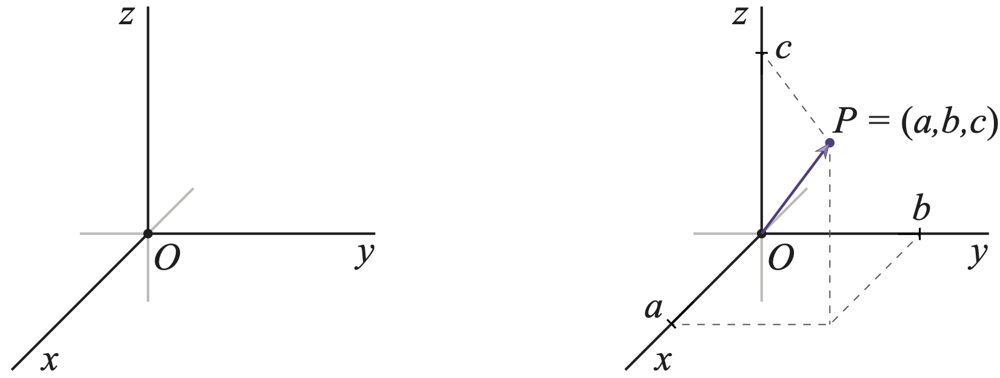

\(\renewcommand{\a}{\mathbf{a}}\) \(\renewcommand{\b}{\mathbf{b}}\) \(\renewcommand{\c}{\mathbf{c}}\) \(\newcommand{\g}{\mathbf{g}}\) \(\newcommand{\x}{\mathbf{x}}\) \(\newcommand{\y}{\mathbf{y}}\) \(\newcommand{\z}{\mathbf{z}}\) \(\renewcommand{\r}{\mathbf{r}}\) \(\renewcommand{\v}{\mathbf{v}}\) \(\renewcommand{\u}{\mathbf{u}}\) \(\newcommand{\kk}{\mathbf{k}}\) \(\newcommand{\p}{\mathbf{p}}\) \(\newcommand{\m}{\mathbf{m}}\) \(\renewcommand{\d}{\mathrm{d}}\) \(\newcommand{\e}{\mathrm{e}}\) \(\newcommand{\A}{\mathbf{A}}\) \(\newcommand{\B}{\mathbf{B}}\) \(\newcommand{\D}{\mathbf{D}}\) \(\newcommand{\E}{\mathbf{E}}\) \(\newcommand{\J}{\mathbf{J}}\) \(\newcommand{\F}{\mathbf{F}}\) \(\newcommand{\M}{\mathbf{M}}\) \(\renewcommand{\H}{\mathbf{H}}\) \(\renewcommand{\P}{\mathbf{P}}\) \(\newcommand{\R}{\mathbf{R}}\) \(\renewcommand{\l}{\mathbf{l}}\) \(\renewcommand{\S}{\mathbf{S}}\) \(\newcommand{\V}{\mathbf{V}}\) \(\renewcommand{\L}{\mathbf{L}}\) \(\newcommand{\ms}{\;\text{m}\;\text{s}^{-1}}\) \(\newcommand{\mss}{\;\text{m}\;\text{s}^{-2}}\)
\(\DeclareMathOperator{\sinc}{sinc}\)
\(\newcommand{\kopje}[2]{\vskip0.5em\noindent\textbf{\textsf{{\color{OliveDrab}{Week #1}:}~ #2}}}\) \(\newcommand{\homework}[1]{\noindent{\color{FireBrick}{\textbf{\textsf{Homework:}}} #1}}\) \(\newcommand{\tutorial}[1]{\noindent{\color{SteelBlue}{\textbf{\textsf{Tutorial:}}} #1}}\) \(\newcommand{\problems}[1]{\noindent{\color{LightSlateGrey}{\textbf{\textsf{Weekly problems:}}} #1}}\)
\(\newcommand{\af}[1]{[A\&F: #1]}\) \(\newcommand{\basis}[1]{\hat{\text{e}}_{#1}}\)
Vectors#
Coordinate systems#
When we want to describe the motion of objects (particles, blocks sliding down ramps, planets orbiting stars, etc.), we must use a coordinate system. The simplest coordinate system is a Cartesian system, where three fictitious axes, \(x\), \(y\), and \(z\), cross each other at right angles in a single point called the origin \(O\):

Fig. 3 Every point \(P\) has three coordinates, \((a,b,c)\), determined by how far away from the origin \(P\) lies along the three orthogonal (perpendicular) axes. Note the orientation of the axes: the black lines indicate the positive direction, while the grey lines extend into the negative direction. You must adhere to this convention and avoid, say, swapping the \(x\) and \(y\) axis while keeping the \(z\) axis fixed. That will change the orientation of the coordinate system, and it will have consequences for some vector equations later on, most notably the cross product.#
The point \(P = (a,b,c)\) determines a precise location in space relative to \(O=(0,0,0)\) and the three axes. However, it also defines a vector \((a,b,c)\) from the origin to \(P\). That’s why we have indicated \(P\) with both a dot and an arrow. You don’t need to do this in your sketches, but you do need to remember the relation between a point and a vector: a point has coordinates relative to an origin, while a vector is an arrow from the origin to the point. We will give the point \(P\) a position vector \(\mathbf{r}_P\), or \(\mathbf{r}\) for short.
Next, imagine that \(P\) indicates the position of a body (a particle, a planet, …) that can move in time. We often designate the three coordinates \((a,b,c)\) of \(P\) with the axes labels \(x(t)\), \(y(t)\), and \(z(t)\). We can then write the position of \(P\) relative to the origin \(O\) in vector form as
Here, \(\mathbf{r}\) is a vector, and we also introduced another common notation where the coordinates \(x\), \(y\), and \(z\) are included as indices on the vector name: \(r_x\), \(r_y\), and \(r_z\). You need to be comfortable with both notations.
Next, we define the velocity of the body with position \(\mathbf{r}(t)\). The general definition holds:
the velocity is the rate of change in time of the position. Hence we again have the time derivative. However, the time derivative of a vector is a lot more complicated than just taking the time derivative of its elements. Nevertheless, in Cartesian coordinates — and in Cartesian coordinates only! — the velocity is indeed the vector of time derivatives:
where we use a subscript \(x\), \(y\), or \(z\) again to denote the velocity components in that spatial direction. For acceleration we have to take the second time derivative of the position vector. Again only in Cartesian coordinates this is the time derivative of the components of \(\mathbf{v}\):
We also use a dot to denote time derivatives. This is Newton’s original notation, and you will often see time derivatives indicated by a dot over the function, and space derivatives as a prime.
Just like in the one-dimensional case, we can integrate velocity and acceleration with respect to time in order to find the position and velocity, respectively. In Cartesian coordinates we need to do this for each of the three components separately:
We can write this as
However, you should always remember that these are really three separate integrals. Similarly, we can write for the velocity
Another useful way in which we can write the position, velocity and acceleration in three dimensions is using the unit vectors \(\mathbf{e}_x\), \(\mathbf{e}_y\), and \(\mathbf{e}_z\):
You have seen these before as \(\hat{\mathbf{i}}\), \(\hat{\mathbf{j}}\), and \(\hat{\mathbf{k}}\), but we will use this “new” notation that shows a more explicit link with the Cartesian coordinates \(x\), \(y\), and \(z\). This will be useful later when we employ other coordinate systems, like polar coordinates. With these unit vectors we can write the velocity and acceleration as
Force balance
Newton’s first law states that there is no net force on a body at rest or in uniform linear motion. This means that there may be multiple forces acting on the body, but they all sum to zero. In one dimension, this is easy to understand:
All these forces lie along the same line.
In three dimensions, this becomes a vector equation:
which should be understood as
Therefore, each component should add up to zero:
When you draw your diagrams, you will need to decompose your forces into their components.

Fig. 4 
Figure: Forces balance in two dimensions.#
As an example, consider a mass \(m\) on a frictionless ramp that is subject to a force \(f\) preventing it from sliding down (see Fig. [ref:fig:04ueorfjsl]). Gravity produces a downward force \(W\), the weight, and the ramp produces a normal force \(N\) that prevents the mass from moving into the ramp. The normal force will always have exactly the magnitude to keep it on the ramp. We can choose our \(x\) and \(y\) coordinates any way we like, as long as they are perpendicular (orthogonal) to each other. In this problem it is convenient to take \(x\) down the ramp, and \(y\) perpendicular to the ramp.
Consider Newton’s second law, \(\mathbf{F} = m\mathbf{a}\) in vector form. Since the mass is at rest, the acceleration is zero (\(\mathbf{a}=0\)), and the three forces should balance, i.e., sum to zero[1]:
In vector form this is
Setting the \(x\) and \(y\) components to zero leads to the two equations:
Since \(W = mg\), and we want to know the values of the magnitudes \(f\) and \(N\) in terms of \(m\) and \(\theta\), we can rearrange:
The normal force \(N\) is due to Newton’s third law, which states that a force on one body (the ramp) due to another (the mass) produces a force equal in magnitude and opposite in direction on the first body (the mass) due to the other (the ramp). Note the subtlety here that the normal force on the mass due to the ramp is not along \(\mathbf{W}\), so it is the component perpendicular to the ramp that determines \(\mathbf{N}\).
Note that in this case the forces are easy to determine, so we do not need to use equation ([ref:eq:ghureo940woijerfd]) to find the force balance. Moreover, the force \(\mathbf{f}\) is not conservative since its magnitude depends on the ramp inclination and not the position (it could be friction, which does not have a corresponding potential energy).
Exercise: Solve the problem in figure [ref:fig:04ueorfjsl] using coordinates where the \(x\) direction is horizontal and the \(y\) direction is vertical.
Another important concept for vectors is the point of engagement, or the starting point of the arrow that represents the force. We treated the mass in figure [ref:fig:04ueorfjsl] as a point mass, and all forces therefore engage at the centre of gravity. However, for extended systems this can be different. For example, while the weight force (\(mg\)) always has the centre of gravity as the point of engagement, the normal force has the boundary between the block and the ramp surface as the point of engagement. Any friction force also has the point of engagement lying in the contact surface between the block and the ramp. We will explore the importance of this when we consider torque in a future lecture.